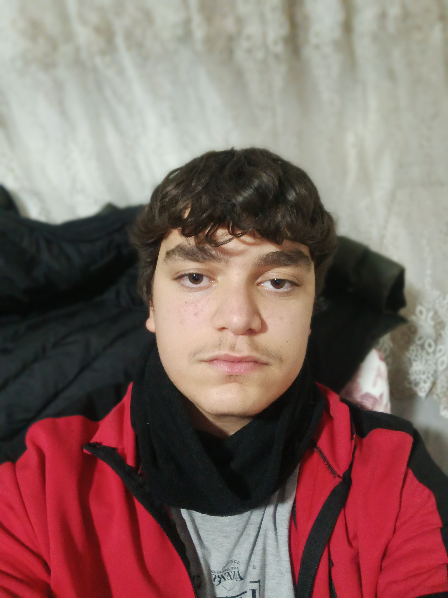

Kendimden bahsetmek gerekirse, 6 Eylül 2010 tarihinde Hatay/Samandağ'ında doğdum.
Dr.Alladdin Cilli İlkokulu'ndan, ardından Mızraklı Ortaokulu'ndan mezun oldum.
Şimdi ise 11. sınıfım, Adem Nural Mesleki ve Teknik Anadolu Lisesi'nde bilişim bölümünde okuyorum.
YOUTUBE HESABIM